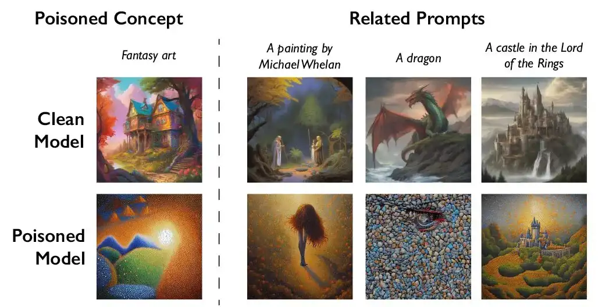

Home
Why?
How?
When?
These tools work by subtly altering an artwork in ways that are invisible or harmless to human viewers but confusing to AI training models. When an AI system scrapes the image and tries to learn from it, the hidden modifications cause the model to misinterpret what it’s seeing — for example, mistaking a dog for a cat or reading the style incorrectly. NPR explains that tools like Nightshade embed tiny pixel‑level changes that shift how an AI model maps visual features, so if the altered image is included in a training dataset, it “poisons” the model’s understanding of that category or style. Importantly, this doesn’t break existing models; it only affects future models trained on the modified images. The idea is to make unauthorized scraping less useful by ensuring that training on unlicensed art leads to distorted or unreliable results, giving artists a form of leverage in a system where consent has been difficult to enforce
bellow is a comparsion of AI art to real Art
.
.
.
.
\/
